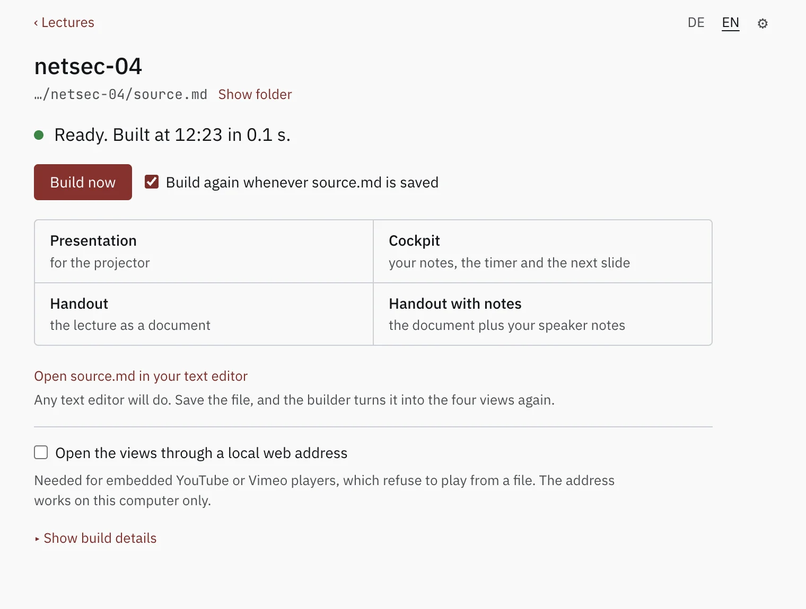

psi-slides · back to the front page · Diese Seite auf Deutsch
Getting started
Two ways in, and they end in the same place: both run the same
build.js and write the same four web pages beside your
source.md – a projection for the room, a cockpit for the
lecturer, and two handouts.
The app is a window you download and
open a source.md in. It builds the lecture, and builds it again
every time you save. Nothing else has to be installed: no Node, no
terminal.
The command line is a clone
and an npm install, for a machine that already has a terminal
on it – and the only way to have a build server run psi-slides
unattended, in a CI job.
The app
Open a lecture’s source.md, or drop it on
the window, and the four views are built. Leave the window open beside your
text editor and every save builds them again.
One sentence says whether the last save built, and four buttons open what it produced. Nothing else is installed: no Node, no terminal, no project settings to fill in.

Download it
Until 2.0.0 the app is published separately from psi-slides itself, under
a tag of its own, builder-0.1.0, and marked on GitHub as a
pre-release: not the current version of anything, a package
offered early.
| System | Package | State |
|---|---|---|
| macOS, Apple Silicon | psi-slides-builder-mac-arm64.dmgpsi-slides-builder-mac-arm64.zip |
Tried on a real Mac. |
| Windows, 64-bit | psi-slides-builder-win-x64.exe |
Experimental. Built by CI, never started. |
| Linux, 64-bit | psi-slides-builder-linux-x86_64.AppImagepsi-slides-builder-linux-amd64.deb |
Experimental. Built by CI, never started. |
The first start
Windows and Linux are experimental. Those two packages come off the build machine and have never been started on a real one. They may well work; nobody has watched them do it. If you try one, whether it runs or falls over is worth an issue either way. The macOS package has been used on a real Mac.
The packages are not signed, apart from the macOS one, which is signed and notarised by hand – Apple’s own check – before it is uploaded. If that has not happened for this build yet, a double click gets you a warning that the developer cannot be verified: open the app once with a right click and Open instead, and the warning does not come back. Windows shows its SmartScreen warning once – More info, then Run anyway. An AppImage has to be marked executable before it will start.
What it is, and what it is not
When a build fails, the message from build.js stands there
as it was written, naming the line. The four views keep the last build that
worked, so a broken save never takes your slides away in the middle of a
lecture.
Two switches are worth knowing about. Open the views through a local web address starts a small server on this computer: embedded YouTube and Vimeo players refuse to run from a file, and this is what makes them play. Open the views in chooses between Chrome or Edge, which is what psi-slides is tested in, and whatever your system opens HTML with.
It is not a Markdown editor. You write the lecture in whatever text editor you already use; the window watches the file. There is no split view, no preview pane, no Git client and nowhere to type build commands.
It is also not a second way of doing anything: it runs the same
build.js on the same source.md and produces the
same four files. Nothing leaves the computer. No account,
no telemetry, no update check, no network access of any kind.
The command line
The same build, for a machine that already has a terminal on
it – and the only way to run psi-slides in CI. It needs Node 20 or
newer, which is what runs build.js, and nothing else:
no LaTeX, no Pandoc, no server, nothing installed system-wide.
Build the tutorial
npm install runs once and lands in a
node_modules folder beside build.js. It fetches
the typefaces psi-slides embeds into every lecture and the handful of
packages the build uses.
The four HTML files appear beside source.md,
and they are what you hand over: they carry their own fonts, pictures and
code, and fetch nothing when they are opened.
git clone https://github.com/UBA-PSI/psi-slides
cd psi-slides
# once: the bundled typefaces and the build dependencies
npm install
# build all four views next to source.md, then open the projection
node build.js lectures/tutorial/source.md
open lectures/tutorial/audience.html # macOS; xdg-open or your browser elsewhereWhile you are writing
--watch rebuilds on every save and reloads
every open tab, so the text editor, the projection and the cockpit stay
visible at once. That is what the app does by default.
--serve is for the one thing a file on disk
cannot do: play an embedded YouTube or Vimeo player. lint.js,
which reads a lecture over before you hand it out, has no button in the app
and lives here.
# rebuild on save, reload every open tab
node build.js lectures/tutorial/source.md --watch
# the same, served over http on this computer, for embedded players
node build.js lectures/tutorial/source.md --watch --serve
# chunk ids, word budgets, unclosed directives, oversized assets
node lint.js lectures/tutorial/source.mdFrom a machine with nothing on it
The steps take a Windows or macOS machine with nothing installed on it to a built copy of the tutorial. Numbered, because they are a sequence: doing the fourth before the second leaves you in the wrong folder.
The app above needs none of this.
If you have never installed Node or used a terminal
Install Node
Open nodejs.org. The button offers the
LTS build – the long-term support one – in the right file for the machine
you are on; take that download. On macOS you get a .pkg:
double-click it, click through the installer, give your password when it
asks. On Windows you get an .msi: double-click, accept the
defaults, and leave the checkbox about tools for native modules alone.
Nothing in psi-slides needs them.
If you already use a package manager, brew install node on
macOS and winget install OpenJS.NodeJS.LTS on Windows do the
same thing.
Open a terminal
On macOS press Command-Space, type terminal, press Return.
On Windows open the Start menu and type terminal: take Windows
Terminal if it appears, PowerShell otherwise. You get a window with a cursor
in it. You type one line, press Return, and it answers.
node --versionThe answer is a version number. Anything from v20 upwards works, and a
fresh LTS download is well above it. If you instead get command not
found or is not recognized, close the window and open a
new one: a terminal that was already running when you installed Node has not
seen it yet.
Get the files
Take a clone if you have git, and Download ZIP from the
repository’s green
Code button otherwise. Unpack it the way you would any
other download; double-clicking is enough on both systems. You get a folder
whose name starts with psi-slides, and that folder is the whole
tool. Put it somewhere you can find again, because the terminal has to be
pointed at it in a moment.
On Windows, unpack the .zip rather than opening it by
double-click: Windows shows the contents of a ZIP as if it were a folder,
but commands cannot run inside it.
Point the terminal at the folder
cd psi-slidesThe cd line has to name where the folder actually is: on
Windows, for instance cd C:\Users\you\Downloads\psi-slides. Instead of
typing the path, type cd and a space, then drag the folder from
the file manager into the terminal window – the path writes itself.
Fetch what the build uses
npm installnpm install runs once, in that folder, and takes a few
seconds. It fetches the
typefaces psi-slides embeds into every lecture and the handful of packages
the build uses. All of it lands in a node_modules folder beside
build.js: nothing is installed system-wide, and the lectures
you build fetch nothing when they are opened.
Build the tutorial
node build.js lectures/tutorial/source.mdThe same line on Windows and macOS, forward slashes included: Node takes them everywhere. It reports what it embedded – the images, the typefaces, the QR codes, the rendered maths – and ends with what it wrote.
Wrote lectures/tutorial/print.html, lectures/tutorial/print-notes.html, lectures/tutorial/audience.html, lectures/tutorial/speaker.html (11 columns, 59 chunks)Open it
Double-click lectures/tutorial/audience.html. It opens in
your browser and that is all it needs: ? lists the keys,
S opens the cockpit. Mail the file to somebody who has none of
this installed and it still works.
Linux readers: you have all of these tools already.
Distribution packages are sometimes several versions behind, so
node --version is still worth running.
What the download does not have
The tagged release is 1.0.0, and its source format is fixed: a lecture that builds against it today keeps building the same way. What it does not contain is everything written since.
Figures written as ::: draw, the
title slides and section dividers, cards and
rows, and the graphical figure editor are on
main and not in 1.0.0. If you came for any of those, take the
repository rather than the release archive – and note that the Source
code (zip) attached to a release is the tagged release, so it does not
contain them either.
What you give up is the format promise: these parts may still need an edit to your source when they reach a release.
git clone https://github.com/UBA-PSI/psi-slidesWithout git, take Download ZIP from the repository’s green Code button. The app above builds these as well: it carries the copy of psi-slides it was packaged with.
Write your own lecture
A lecture is one folder with one source.md in it.
Have that first one written for you rather than starting from an empty file:
the settings block at the top of a source.md, its frontmatter,
has keys a blank page cannot guess.
Three commands
--new writes a folder with a valid settings
block and a few example chunks – a chunk is one piece of a lecture, and
one slide on the projection. Then you leave --watch running
while you write.
lint.js is the one to run before you hand
anything over: it catches two chunks with the same id, unclosed
::: blocks, slides over their word budget, and files too large
to embed.
# write a new lecture folder, settings block included
node build.js --new my-lecture
# rebuild on save, and reload every open tab
node build.js lectures/my-lecture/source.md --watch
# chunk ids, word budgets, unclosed directives, oversized assets
node lint.js lectures/my-lecture/source.mdIn the app, New lecture… asks for a folder name and a place
to put it and writes the same starter lecture --new writes,
down to a small figure for the diagram editor to open. Rebuilding on save is
its normal state rather than a flag, and it shows what the build says and no
more than that, so lint.js stays a command.
What to write in that file is the tutorial lecture, which is a lecture about writing lectures: every construct the format has, shown working, with its source beside it. The linter’s messages name the rule and the line, so they are readable next to it.
Where to read further
- What psi-slides is The front page: one lecture as the room sees it and as the reader gets it, and why those are the same file.
- How psi-slides compares Beamer, reveal.js, Quarto, Marp, Slidev, PowerPoint and friends, in both directions, including where psi-slides loses.
- Figures you write The case for the figure language, and the manual beside it, which builds one a line at a time and lists every statement.
- The repository The README explains the format and says what the tool is good at and what it is not good at.